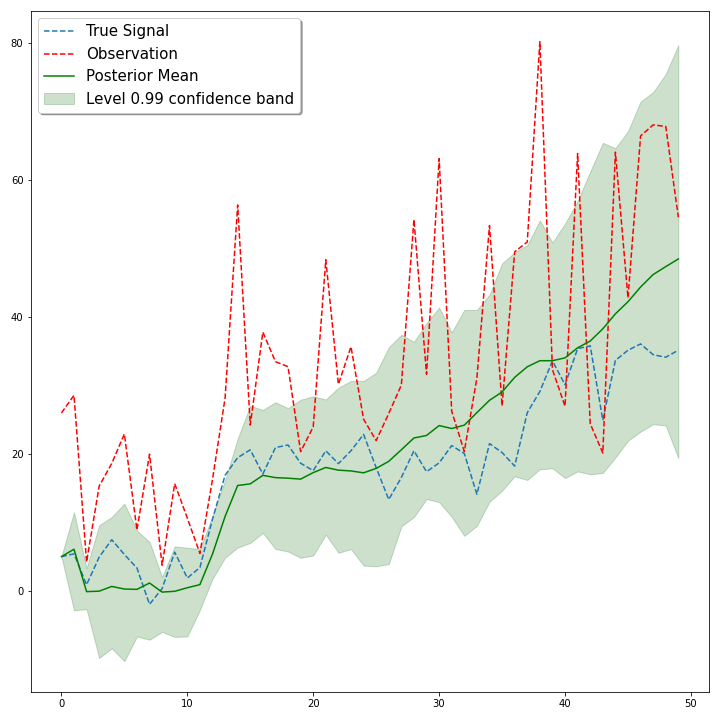

Making Sense of Particle Filtering for POMDPs (Part 1)

Before you read (source code)
An open source Jupyter notebook including source code for this blog post is available. Click the link below to open an interactive version of the source code in your browser.

Introduction
In the field of reinforcement learning, partially observable Markov decision processes (POMDPs) form a mathematical model for the underlying decision process of an agent that is unable to know the exact state it is currently in. While incorporating uncertainty about the state of the environment complicates matters mathematically, it allows for modeling more general problems that arise in various real world problems. Take, for example, a robot which has to navigate through its environment by using sensor data. Such data is inevitably noisy, which gives rise to an inherent uncertainty about the exact state that the robot is currently in. Even in discrete environments, like Atari games (which have become a standard task in deep reinforcement learning research), a single frame sometimes fails to convey the exact state of the environment, since variables depending on the rate of change (e.g. velocity of an enemy) can only be inferred through multiple consecutive observations.
In this blog post we will explore a popular method for tracking the unobservable state in a POMDP, called particle filtering, with a simple example of recovering noisy observations in a discrete time Markov process.
POMDPs and Beliefs
Formally, a POMDP consists of a tuple $\langle S, A, \Omega, T, O, R \rangle$, where $S$ is the state space, $A$ is the set of actions and $\Omega$ denotes the set of possible observations. A transition function $T(s'|s,a)$ gives the probability of transitioning to state $s'$ when in state $s \in S$ and executing action $a \in A$, whereas an observation function $O(o | s',a)$ gives the probability of observing observation $o \in \Omega$ after action $a$ has taken the agent to state $s'$. Finally, $R(s,a)$ gives the reward when taking action $a$ in state $s$. The goal (as in the fully observable Markov decision process), is usually to maximize an expected long-term reward of the form $$\mathbb{E}\left[\sum_{t=0}^h \gamma^t R_t\right],$$ where $0 \leq \gamma \leq 1$ is a discount factor, $h$ is the planning horizon and $R_t$ is the reward obtained at timestep $t$.
To tackle the problem of partial observability, one needs to incorporate some kind of memory into the agents decision process. While tracking a history of past events is one possibility, another approach is to summarize this into a sufficient statistic, called the belief state $b(s)$. The belief state is a probability distribution over all possible states and models the agents believes about the current true state of the environment. Although the exact computation of $b$ with respect to an initial prior belief $b_0$ when observing $o$ after action $a$ is possible through Bayesian updating, this requires knowledge of the POMDP dynamics:
\begin{equation}b_{a,o}(s') = \frac{O(o|s',a)\sum_{s\in S} T(s'|s,a)b(s)}{\sum_{s' \in S}O(o|s',a)\sum_{s\in S}T(s'|s,a)b(s)}.\end{equation}
Even if the model is known, updating can turn out to be cumbersome due to computational complexity that quadratically grows with the size of the state space $|S|$. While there are various ways to work around this issue, the theory of particle filtering turns out to be effective and compatible with the POMDP framework for tracking belief states in an approximate manner.
Particle Filtering with Sequential Importance Sampling
Particle filtering, also known as Sequential Monte Carlo, is a widely used technique for estimating a noisy and/or unobserved signal in a dynamical system. To be precise, we assume that we have a discrete time Markov process ${X_t}$ ($t \in \mathbb{N}$) governed by dynamics $p(x_t | x_{t-1})$ with initial state distribution $p(x_0)$ (for simplicity, we for now drop the possibility of taking actions in the following example). Furthermore, we assume a model for the observations $Y_t$, which is given by $p(y_t | x_t)$, where the values of $Y_t$ are conditionally independent given the values of $X_t$. The general goal of particle filtering is to then approximate the posterior distribution $p(x_t | y_0, y_1, \dots, y_t)$, i.e. to obtain a probability distribution for the true signal at time $t$, given all the information (observations) up to time $t$.
While this problem has been studied in various fields for a long time and the mathematical theory behind its possible solutions are rich, we will focus on a simple, but effective Monte Carlo algorithm based on importance sampling. Let’s assume we are given a noisy observation $(y_0, y_1, \dots, y_{T-1})$ of the signal $(x_0, x_1, \dots, x_{T-1})$ with length $T$. To recover the signal, consider the following procedure (assuming knowledge of $p(x_t | x_{t-1})$ and $p(y_t | x_t)$ ):
-
Initialize $N$ sequences $x_i^n$ $(i = 0, \dots , T-1)$ with initial values $x_0^n$ drawn according to $p(x_0)$.
-
Initialize an array of weights $\mathbf{w_0} \in \mathbb{R}^N$ with ones.
-
For $t = {1,\dots, T-1}$:
- Predict the next value for each sequence by sampling from the model: $$x_t^i \sim p(x| x_{t-1}^i)$$
- For each sequence $x_i^n$ ($i \leq t$), evaluate how likely the observation $y_t$ would have been, assuming that $x_i^n$ was the true signal: $$w_t^n := w_{t-1}^n \cdot p(y_t | x_{t-1}^n)$$
- Normalize the weights: $$w_t^n = \frac{w_t^n}{\sum_{i=1}^n w_i^n}$$
By following this simple algorithm, we obtain $N$ sequences (also called particles) $x_{0:T-1}^n \in \mathbb{R}^{T}$ with corresponding likelihoods $w_{T-1}^n$ that indicate, how likely it was for sequence $x_{0:T-1}^n$ to be the true sequence that led to the observation vector $(y_0, y_1, \dots, y_{T-1})$. Intuitively, if $N$ is chosen large enough, we would expect to find a sequence $x_{0:T-1}^n$ with a high enough weight $w^n$, such that it is a good candidate solution $x_{0:T-1}^n \approx (x_1, x_2, \dots, x_{T-1})$. However, there is a small technical issue with the algorithm above, called particle degeneracy. Due to randomness, most of the particles $x_{0:t}^n$ will receive a very low weight $w_t^n$ for growing $t$, since propagation of deviations in the generation of $x_t^n$ from the true signal can grow arbitrarily large. Therefore, it can happen that almost all weights will be close to $0$ after the normalization step, while one weight of a particle that most closely resembles the true signal will get all the credit. To avoid this, we can completely resample $N$ particles from the sequences $x_{0:t}^n$ from time to time according to their weights $w_t^n$ and reset the weights $w_t^n = \frac{1}{N}$. Over time, this will discard highly unlikely sequences and only keep promising ones.
To see this algorithm in action, consider the following example: Let $X_t | X_{t-1} = x_{t-1} \sim \mathcal{N}(x_{t-1} +1, 16)$ be a discrete time random walk with constant upwards drift. Furthermore, let $Y_t | X_t = x_t \sim \Gamma(8,\sqrt{|x_t|})$ follow a Gamma distribution with constant shape parameter.
We start off our simulation experiment by generating a sequence $(x_0, \dots, x_{49})$ of length $T = 50$ and sample an observation signal $(y_0, \dots, y_{49})$ accordingly. Then, we run the algorithm above with particle resampling using a total of $N = 2000$ particles. Figure 1 shows the resulting posterior mean as well as a level 0.99 confidence band obtained from the empirical particle distribution.
| Figure 1: Simulation Study |
|---|
|  |
Despite the high noise in the observation, our simple algorithm manages to recover the true signal reasonably well in the mean. Additionally, since we approximate a complete posterior distribution we can make use of the uncertainty quantification that comes with it. This can be particularly useful in reinforcement learning, since the study of decision making inherently involves quantifying ones certainty in particular events.
Applications to POMDPs
While in the example above we excluded the possibility of taking actions in the Markov process $X_t$, particle filtering can be easily extended to the POMDP setting. In fact, sequential importance sampling is a useful tool for approximating the belief state $b(s)$, which in itself can be interpreted as the posterior distribution of the true state given past observations (including actions). For instance, if we had the POMDP dynamics available, we could apply the above algorithm in a slightly modified way:
-
Instead of sampling $x_t^i \sim p(x| x_{t-1}^i)$ we predict a next candidate state given action $a$ and current candidate state $s$: $$s' \sim T(\cdot | s,a)$$
-
After taking action $a$ and observing $o$, we then update our weights $w$ according to the observation likelihood given $a$ and $s'$: $$w' = O(o| s', a)w$$
This way, we could effectively keep track of likely state sequences $(s_0, s_1, \dots,)$ without ever needing to explicitly observe them.
It is important to keep in mind that the sequential importance sampling algorithm in the form it is presented above requires explicit knowledge of the state transition and observation model. In case these are available, particle filtering is a useful tool for approximating the exact posterior update $b_{a,o}(s')$. For example, in Partially Observable Monte-Carlo Planning, an extension of Monte-Carlo Tree Search for POMDPs [1], particle filtering is used to track the belief state while unrolling episodes through a generative model of the POMDP dynamics. When a model is not available, recent deep learning based approaches have been proposed, like deep variational reniforcement learning for POMDPs [2], which learns a deep generative model of the POMDP transition dynamics by sampling likely candidate state sequences through particle filtering. Similarly, particle filters have been used for keeping belief states in Bayesian reinforcement learning for large POMDPs which represent a distribution over possible POMDP models [3].
Alright, that’s it for now. In Parts 2 and 3 of this series, we will dive into more detail of applying particle filtering to POMDP control problems by using methods like the Bayes-Adaptive and deep variational frameworks.
References
[1] Silver,D. and Veness, J. Monte-Carlo planning in large POMDPs. In Advances in Neural Information Processing Systems, pages 2164-2172, 2010.
[2] Igl, M., Zintgraf, L., Le, T. A., Wood, F., and Whiteson, S. Deep variational reinforcement learning for pomdps. arXiv:1806.02426, 2018.
[3] Katt, S., Oliehoek, F. A., and Amato, C. Learning in pomdps with monte carlo tree search. In International Conference on Machine Learning, pp. 1819–1827, 2017.
Markus Peschl
MSc Applied Mathematics Student
My research interests include deep reinforcement learning and stochastic processes.